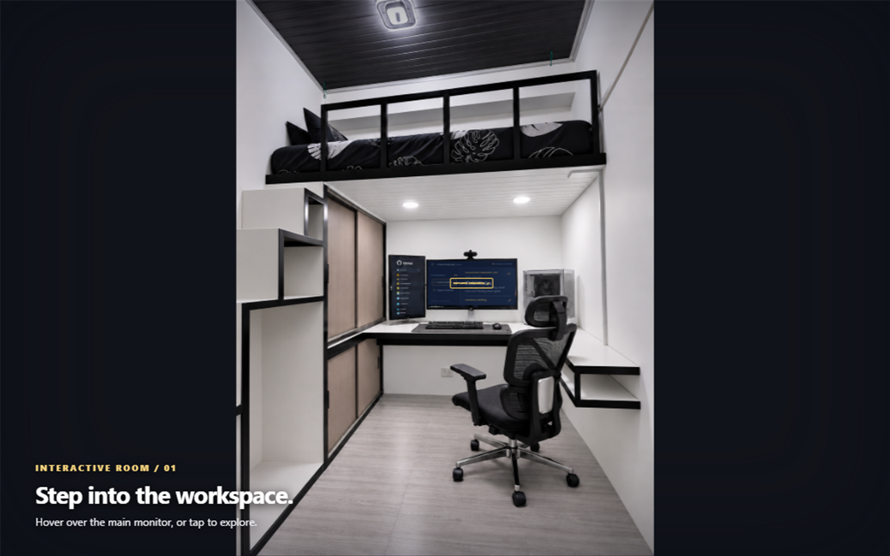
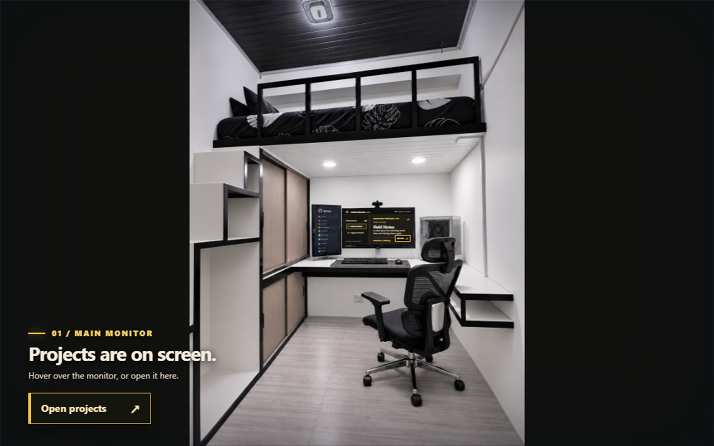
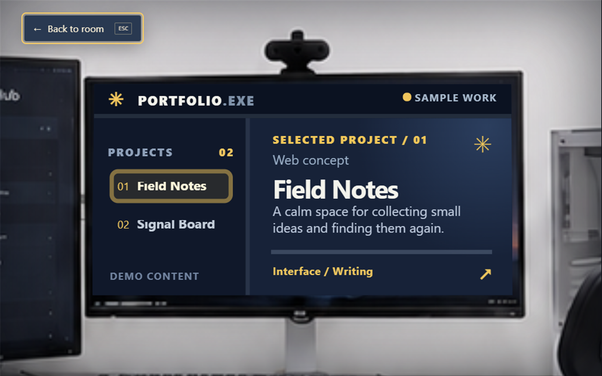
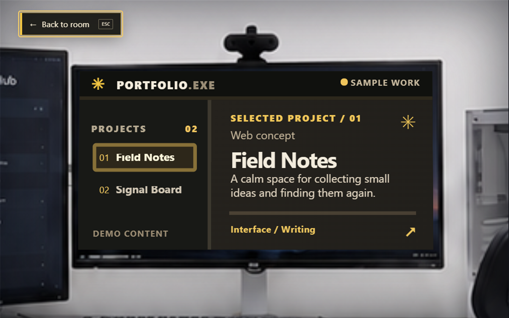
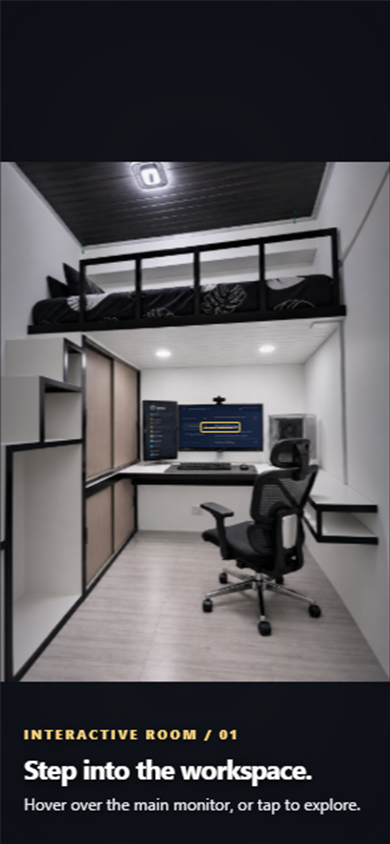
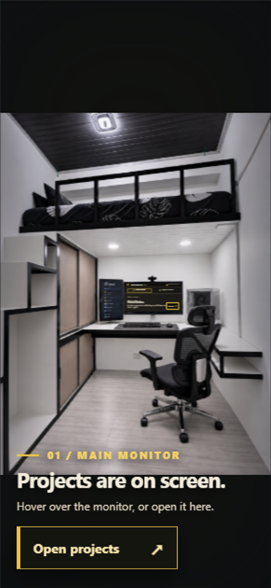
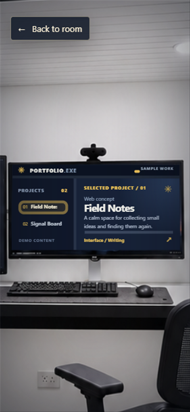
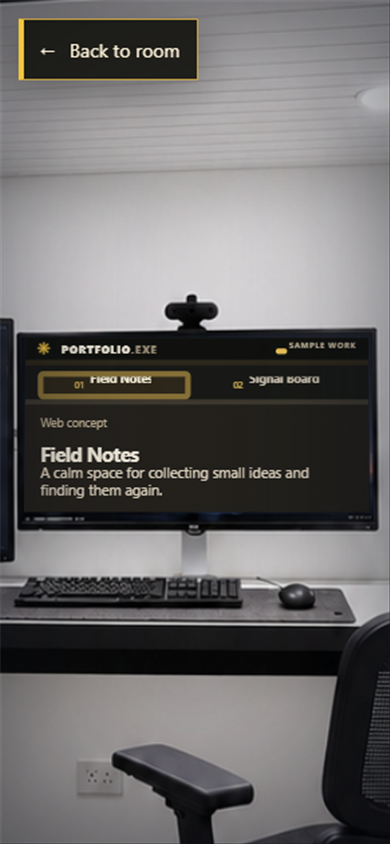

Desktop · room view


Desktop · inside the monitor


Phone · room view


Phone · reading a project


The room photo stays fixed as the visual reference. The update makes the monitor easier to discover, gives the screen a warm black palette, and reflows the Projects window for phone reading.







